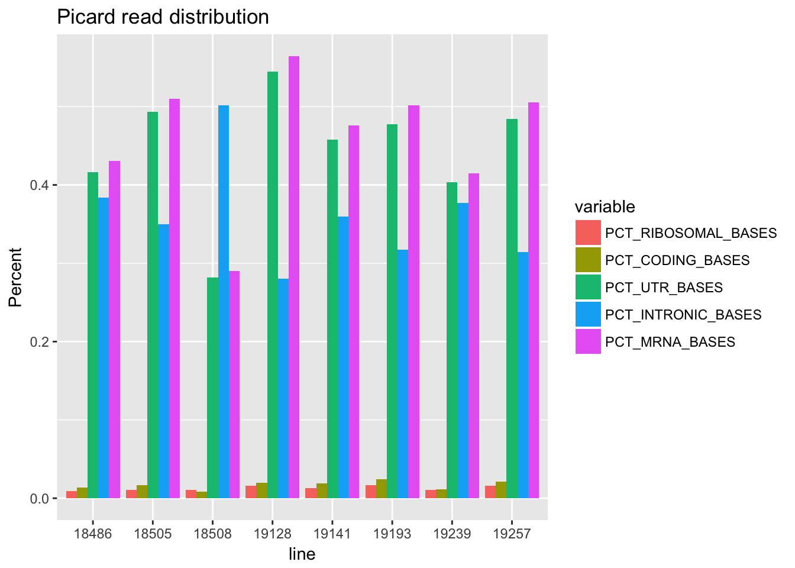

Last updated: 2018-03-12
Code version: 32e027a
The pilot project has 16 human lines of net-seq data. I have 3 lanes of sequencing for each library of 8. The first library is the same 8 samples from Net3. I can use cat to combine the samles from seperate lanes into one file. I will call these YG-SP-NET3-[sample_name]_combined_Netpilot.fastq. I will use the project directory /project2/gilad/briana/Net-seq-pilot
I will update my snakefile by copying the old one as Snakefile_old.
Changes:
change genome location to /project2/gilad/briana/genome_anotation_data
Add picard tools annotation to the snakefile
compute genome coverage for the dedup and sorted bam files
My old snakefile create the reference genome for every new analysis. It would be better to build the reference once and always keep it in one place. I will now be in /project2/gilad/briana/genome_anotation_data. To do this I will change the snakefile to point to this location and change the config file to point to the correct location.
#config file
dir_genome: /project2/gilad/briana/genome_anotation_data/
#snakefile
dir_gen=config["dir_genome"]
dir_genome= dir_gen + "genome/"
Picard tools will take in a flat file and a rRna file and will assess coverage at genomic regions. Before I make the rule I need to convert the gencode.v19.annotation.gtf to a flat file.
Update net-seq environment:
#convert gtf to genepred flat
gtfToGenePred -genePredExt -ignoreGroupsWithoutExons gencode.v19.annotation.gtf gencode.v19.annotation.refFlatAdapt rule from Seb’s Snakefile
#config file
ref_flat: /project2/gilad/briana/genome_anotation_data/gencode.v19.annotation.refFlat
ribosome_intervals: /project2/gilad/briana/genome_anotation_data/hg19.rRNA.intervals
#snakefile
ref_flat = config["ref_flat"]
ribosome_int = config["ribosome_intervals"]
#rule
rule collect_rna_metrics:
input:
bam = dir_sort + "{samples}-sort.bam"
ref_flat = ref_flat,
ribosome_int = ribosome_int
output:
rna_metrics = output + "{samples}_RNAmetrics.picard.txt"
params:
strand = "NONE",
memory = "-Xmx12G"
shell:
"picard CollectRnaSeqMetrics {params.memory} I={input.bam} O={output.rna_metrics} REF_FLAT={input.ref_flat} STRAND={params.strand} RIBOSOMAL_INTERVALS={input.ribosome_int}"
The old snakefile has a genome_cov rule for genome cov of the deduplicated files. I want to do this for the sort and dedup files. I also will change the rule so it is -d -5.
rule genome_cov_dedup:
input:
bamdedup = dir_dedup + "{samples}-sort.dedup.bam",
genome = dir_genome + ensembl_genome + ".reads"
output:
dir_cov + "{samples}-sort.dedup.cov.bed"
shell: "bedtools genomecov -d -5 -ibam {input.bamdedup} -g {input.genome} > {output}"
rule genome_cov_sort:
input:
bamsort = dir_sort + "{samples}-sort.bam"
genome = dir_genome + ensembl_genome + ".reads"
output:
dir_cov + "{samples}-sort.cov.bed"
shell: "bedtools genomecov -d -5 -ibam {input.bamsort} -g {input.genome} > {output}"
#in rule all:
expand(dir_cov + "{samples}-sort.dedup.cov.bed", samples=samples),
expand(dir_cov + "{samples}-sort.cov.bed", samples=samples),To test: snakemake -np
to run: nohup scripts/submit-snakemake.sh
n: Wrong number of fields in refFlat file /project2/gilad/briana/genome_anotation_data/gencode.v19.annotation.refFlat at line 1
wget http://hgdownload.cse.ucsc.edu/goldenPath/mm10/database/refFlat.txt.gz downloaded this to see what a proper one should look like. it has 11 columns
(awk ‘{print NF}’ gencode.v19.annotation.refFlat | sort -nu | tail -n 1)
this file has 15
The test file has a gene name before the NM_genecod. My file also has 4 columns at the end that dont seem to be needed. The 12th column is the ensg gene id. I will try ot fix this by moving that to the first comlumn and not printing after 10 in the current file.
awk '{ print $12 "\t" $1 "\t" $2 "\t" $3 "\t" $4 "\t" $5 "\t" $6 "\t" $7 "\t" $8 "\t" $9 "\t" $10 }' gencode.v19.annotation.refFlat > gencode.v19.annotation2.refFlatI needed to get rid of the extra information in the ribsome file. I only want the lines with a known chromosome. The dictionary for the bam file with that is in its header needs to match the dictionary header in the ribsome file.
I fixed the file by getting rig of the chr in the refflat file.
This is the meta file with the information from each picard file when the none flag was used.
picard_all=read.csv("../data/all_RNAmetrics.picard.none.csv", header=TRUE)Melt this so I can make ggplots.
library(tidyr)
library(reshape2)Warning: package 'reshape2' was built under R version 3.4.3
Attaching package: 'reshape2'The following object is masked from 'package:tidyr':
smithslibrary(ggplot2)
library(dplyr)
Attaching package: 'dplyr'The following objects are masked from 'package:stats':
filter, lagThe following objects are masked from 'package:base':
intersect, setdiff, setequal, unionlibrary(stringr)
#make libarary a factor
picard_all$line <= factor(picard_all$line)Warning in Ops.factor(picard_all$line, factor(picard_all$line)): '<=' not
meaningful for factors[1] NA NA NA NA NA NA NA NAlong_picard=melt(picard_all, id.vars=("line"))pct_df=filter(long_picard,variable=='PCT_RIBOSOMAL_BASES' | variable=='PCT_CODING_BASES' | variable=='PCT_UTR_BASES' | variable=='PCT_INTRONIC_BASES' | variable=='PCT_MRNA_BASES')
pct_df$line = factor(pct_df$line)
ggplot(pct_df,aes(line, value, fill=variable )) + geom_bar(stat = "identity",position="dodge") + ggtitle("Picard read distribution") + labs(y="Percent") 
sessionInfo()R version 3.4.2 (2017-09-28)
Platform: x86_64-apple-darwin15.6.0 (64-bit)
Running under: macOS Sierra 10.12.6
Matrix products: default
BLAS: /Library/Frameworks/R.framework/Versions/3.4/Resources/lib/libRblas.0.dylib
LAPACK: /Library/Frameworks/R.framework/Versions/3.4/Resources/lib/libRlapack.dylib
locale:
[1] en_US.UTF-8/en_US.UTF-8/en_US.UTF-8/C/en_US.UTF-8/en_US.UTF-8
attached base packages:
[1] stats graphics grDevices utils datasets methods base
other attached packages:
[1] bindrcpp_0.2 stringr_1.2.0 dplyr_0.7.4 ggplot2_2.2.1
[5] reshape2_1.4.3 tidyr_0.7.2
loaded via a namespace (and not attached):
[1] Rcpp_0.12.15 bindr_0.1 knitr_1.18 magrittr_1.5
[5] munsell_0.4.3 colorspace_1.3-2 R6_2.2.2 rlang_0.1.6
[9] plyr_1.8.4 tools_3.4.2 grid_3.4.2 gtable_0.2.0
[13] git2r_0.21.0 htmltools_0.3.6 assertthat_0.2.0 lazyeval_0.2.1
[17] yaml_2.1.16 rprojroot_1.3-2 digest_0.6.14 tibble_1.4.2
[21] purrr_0.2.4 glue_1.2.0 evaluate_0.10.1 rmarkdown_1.8.5
[25] labeling_0.3 stringi_1.1.6 compiler_3.4.2 pillar_1.1.0
[29] scales_0.5.0 backports_1.1.2 pkgconfig_2.0.1 This R Markdown site was created with workflowr